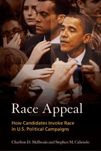

Why, when, and how often candidates use race appeals, and how the electorate responds
Why, when, and how often candidates use race appeals, and how the electorate responds


 Why, when, and how often candidates use race appeals, and how the electorate responds
Why, when, and how often candidates use race appeals, and how the electorate responds

|  |
Race AppealHow Candidates Invoke Race in U.S. Political CampaignsCharlton D. McIlwain and Stephen M. Caliendopaper EAN: 978-1-43990-276-9 (ISBN: 1-4399-0276-3) |
Ralph J. Bunche Award, American Political Science Association, 2012
Selected as “‘The Best of the Best’ from the University Presses” Books For Public and High School Libraries” for the ALA Annual Conference, 2012
"Race Appeal is a well-researched, intellectually sophisticated—with some very convincing arguments—and cogently presented book. It is an exhaustive study that covers the full range of what might be considered race in the U.S. political campaign process. While sweeping in its attention, the book is thematically and theoretically organized in a most productive way, presenting a complex dialogue around racial groups, historical periods, and recent theorization."
—Robin R. Means Coleman, Associate Professor of Communication Studies and of AfroAmerican and African Studies at University of Michigan
In our evolving American political culture, whites and blacks continue to respond very differently to race-based messages and the candidates who use them. Race Appeal examines the use and influence such appeals have on voters in elections for federal office in which one candidate is a member of a minority group.
Charlton McIlwain and Stephen Caliendo use various analysis methods to examine candidates who play the race card in political advertisements. They offer a compelling analysis of the construction of verbal and visual racial appeals and how the news media covers campaigns involving candidates of color.
Combining rigorous analyses with in-depth case studies-including an examination of race-based appeals in the historic 2008 presidential election—Race Appeal is a groundbreaking work that represents the most extensive and thorough treatment of race-based appeals in American political campaigns to date.
Excerpt available at www.temple.edu/tempress
"Race Appeal is a thought-provoking study of the interaction of race and electoral politics in inter-racial and intra-racial campaigns. Analyzing campaign ads, media coverage, experimental results, and campaign strategies, Charlton McIlwain and Stephen Caliendo demonstrate that despite the election of America’s first black president, race still matters and that its study requires the kind of comprehensive treatment demonstrated in this admirable book."
—Andrew Rojecki, University of Illinois at Chicago
"In their concise analysis of race in US politics, McIlwain and Caliendo present a fascinating, engaging interdisciplinary study of how candidates, the media, and the electorate view issues concerning race.... The most important contribution is probably the varied and fascinating questions that McIlwain and Caliendo leave for future researchers to investigate. Their research provides a solid foundation that future scholars will surely build upon, to the benefit of the communication and political science disciplines. Summing Up: Recommended."
—Choice
"Race Appeal is an important book that offers the most comprehensive account to date of the racialized communications environment encountered by candidates of color. Indeed, the authors not only document the extent of positive and negative race-based campaign ads going back to the 1970s, but also quantify the prevalence of racial framing in news coverage of minority candidates’ campaigns since the early 1990s. Finally, McIlwain and Caliendo augment those impressive content analyses of racialized communications with in-depth case studies.... Race Appeal makes a significant contribution to the racial politics literature by shedding much needed light on the nature of the racialized communications environment encountered by candidates of color and showing that race is still a major issue in their campaigns—a contribution that will surely become even more important as the demographic composition of candidates for elected office changes in the decades ahead. This book is a must read, then, for anyone interested in racial politics in general and minority candidates in particular."
—Political Communication
"The [authors] provide a meticulous definition of what constitutes a racialized campaign, they also identify the elements that can enhance the effectiveness of such campaigns....they have provided a strong and lasting piece of research. Race Appeal importantly illuminates major areas of contention, chiefly whether America is post-racial or not. And their response to the post-racial question is a deeply probative 'yes and no,' because voters don’t like racial appeals, yet politicians continue to make them."
—Perspectives on Politics
"McIlwain and Caliendo’s research expands our knowledge and understanding of how language, images, and race interact to influence election outcomes.... In their study, McIlwain and Caliendo painstakingly ask new and different questions while testing old arguments and theories to arrive at rational conclusions.... Race Appeal is a must-read for political science and communication students seeking to expand their understanding of the role race plays in U.S. political campaigns."
—Journalism & Mass Communication Quarterly
Charlton McIlwain published an op-ed piece on Herman Cain in The Christian Science Monitor on July 5.
Acknowledgments
Introduction. The Political Landscape of Race-Based Appeals
Part I The Empirical Evidence on Race Appeals
1. Producing Race Appeal: The Political Ads of White and Minority Candidates
2. The Advantages and Disadvantages of Deploying Racist Appeals among Black and White Voters
3. Neither Black nor White: The Fruitless Appeal to Racial Authenticity
4. Competing Novelties: How Newspapers Frame the Election Campaigns of Blacks, Latinos, and Asian Americans
Part II: Case Studies in Race Appeal
5. Racializing Immigration Policy: Issue Ads in the 2006 Election
6. Harold Ford Jr., Mel Martinez, and Artur Davis: Case Studies in Racially Framed News
7. Barack Obama, Race-Based Appeals, and the 2008 Presidential Election
Epilogue. Racialized Campaigns: What Have We Learned, and Where Do We Go from Here?
Notes
References
Index
Charlton D. McIlwain is Associate Professor of Media, Culture and Communication at New York University. He is the author of When Death Goes Pop: Death, Media and the Remaking of Community and Death in Black and White: Death, Ritual and Family Ecology. He is coeditor of The Routledge Companion to Race and Ethnicity.
Stephen M. Caliendo is Professor of Political Science at North Central College in Naperville, Illinois. He is the author of Inequality in America: Race, Poverty and Fulfilling Democracy's Promise and Teachers Matter: The Trouble with Leaving Political Education to the Coaches. He is coeditor of The Routledge Companion to Race and Ethnicity.
Political Science and Public Policy
Mass Media and Communications
Race and Ethnicity
© 2015 Temple University. All Rights Reserved. This page: http://www.temple.edu/tempress/titles/2101_reg.html.